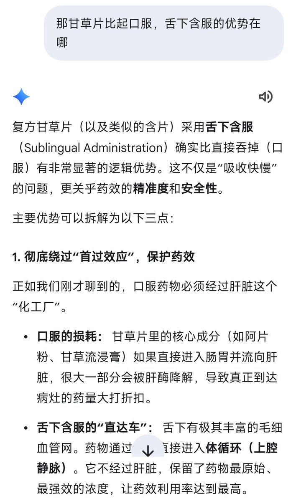

妃宫千早
@neko0202002
@aberyoheiskm @orange219695619 怎么说呢，不太建议舌下含服，除了最外面有一层甜甜的，溶解之后特别苦，甘草片需要几十t起步,舌下含服累计药物浓度特别慢，就比如一次30t，只需要吞两次,舌下含服的话，至少需要十几分钟吧,相比药物浓度，一次性累积，然后慢慢代谢，加上缓慢累积和缓慢代谢，完全是捡个芝麻，丢个西瓜

⊹すずめ⊹
@aberyoheiskm
@orange219695619 刚刚那个结论是之前朋友告诉我的，首过效应具体我也不清楚查了一下百度应该是这个🤔然后p2是问了ai https://t.co/NtZBlEahM8